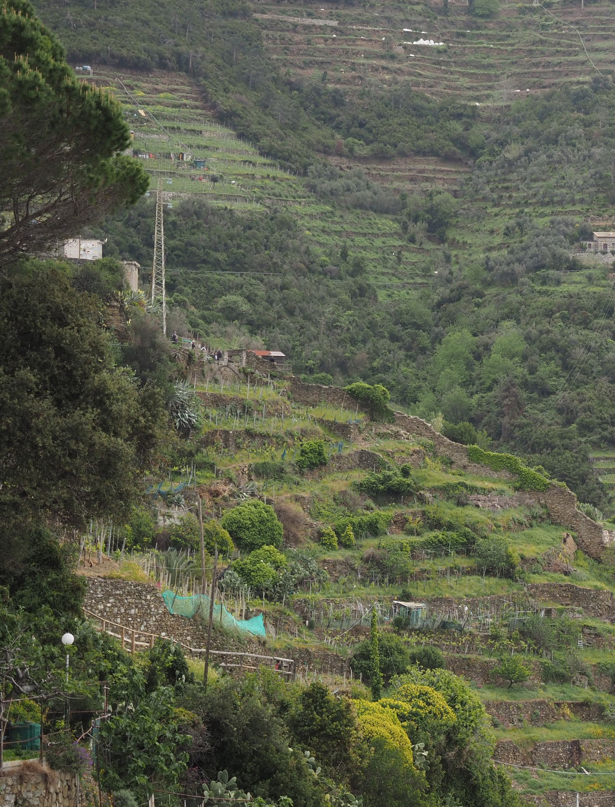

"Even You" Experiences in the field by Tu Quoque Association of Vernazza, Cinque Terre, Italy
International Terraced Landscapes Alliance Journal volume 2, issue 2, pp. 54–67 (2021) · Cite this article
- 152 views
- 145 downloads
- DOI10.5281/zenodo.8081246

Abstract
This contribution by the TuQuoque Association from Cinque Terre give a chronological panorama of a multifaceted and interwoven cluster of activities regarding the revival of the culture and the artistic dimensions of terraced territories at local, national and global levels. Part of this particular activist approach deals with processes of interconnectivity between diverse actors and their experiences, and how to remain open-minded to the unexpected and the welcoming the synergies that emerge from the context.
Keywords
- interconnectivity
- networking
- dry stone walling
- art
- coastal terraced landscape
The beginning
We decided to write this contribution to give evidence to the activities by “Tu Quoque association” in Vernazza (Figure 1) for the protection of life in terraced landscapes and how to create a relationship with neighbouring towns in Italy and abroad.
The “Tu Quoque Association” was founded in October 2013 by Margherita Ermirio, artist and dry-stone wall master, Yann Patrick Martins, artist, and Chiara Viacava, fashion designer. The Name we have chosen for the association means “even you” in Latin. The cultural association aims to revive the culture of the landscape and the flourishing of artistic projects in the territory of Vernazza (SP), Cinque Terre and was born to gather people with the same goals. The story of participation of Tu Quoque Association in Vernazza (Liguria, Italy) represents an emblematic example on how today people, coming from diverse working experiences, develop a common approach to solve the problem of maintaining the terraces and achieve results even if local landowners have their income from other livings, such as tourism.
Role of Women
The following is an overview of the association’s activities considering the historical fact that local women played and still play a fundamental role in the terraced landscape of the Cinque Terre, as men often sought and still seek work on ships that kept them away for long periods of time without returning to the village. Their partners had to bring up their children and maintain the countryside to grow and sell the grapes and/or the vegetable produce. Even today, women are active participants in projects for the recovery of terraces.
The Flood, a catastrophe transformed into an opportunity to learn
In 2011, extensive damage was caused by a flash flood that buried the villages of Vernazza and Monterosso and many others in the valleys behind. The relentless rain, measured up to half a year’s worth of rainfall, fell over a brief amount of time. In the span of just four hours the villages were under water and lives were lost.
Devastated by the landslides, many terraces showed such extensive damage with the paths, and bridges to access were wiped away. Due to this, the farmers could no longer access their lands and abandonment of the land set in.
For the families, who live permanently in Vernazza, we couldn’t bear the sight of the village’s terraces being destroyed and abandoned. Margherita asked her father Vittorio Ermirio to teach her to preserve the knowledge. At first, she was sneered at because she was an unlikely candidate since she had trained as an artist in Italy and abroad and had just spent the winter “being an artist” in London. Nevertheless, she was set on learning and demonstrated her will by clearing a fallen drystone wall. It had fallen ten years prior when her father did not have the strength to rebuild it by himself. Finally, on the fourth day of toiling the father gave in and started teaching her. Together they spent one year of work, where they rebuilt thirteen portions of dry-stone walls that were down in the family terraces. As a matter of fact, when her father was fourteen, he had also begged his father to teach him, but he was denied. His aunt on his mother’s side, Vittoria Borello finally decided to teach him. His first wall lasted five years. Margherita and Yann have always been involved in fine arts and social life having as meeting point the square of Vernazza, they shared time with the people who were still farming vineyards trying to figure out a system to solve the problems of the terraces taking into consideration the whole picture. They were determined to show they meant business and decided to take on the challenge of a big vineyard that was abandoned few years ago. Having found the eight different owners of the plots through the connections in the family, the plots were granted free of rent (gratuitous use) and became the grounds of the cultural association. Once the land was taken, the next step was to learn how to maintain and clear the terraces from thorns and weeds from 6000 square metres of very damaged and neglected terraces.
Luckily, through a young artist from Vernazza, they met Francesca Cattoi, the Curator of the Contemporary Art Museum of La Spezia. She had been organising an exhibition about retaining drystone walls in her museum and invited Margherita to a networking event, where she first encountered ITLA Italy and asked to join it.
In 2015, local villagers as well as persons belonging to the alternative agriculture circuit came to help in maintaining the vineyards and walls (Figure 2). A young oenologist, Michele Potenza, showed interest in the association’s project. It consisted of saving the terraced land around the village of Vernazza (Figure 2) that had been abandoned after the extensive damage caused by the 2011 flood.
It must be remembered that the Cinque Terre landscape is wonderful and engaging because of the dramatic landscape, with its very steep inclines, making it difficult to carry materials and products up and down the mountains.
Seeking like-minded people
At the beginning Margherita as President of the Association hosted Michele, while seeking out like-minded people in the village’s female population who could understand the importance of this project. In order to formalize people to carry on the project and help the young vineyard a weekly art-house film evening was organized, which addressed primarily on the female villagers. While for the local male population, farmers organized dinners consisting of wild boar, with the goal of introducing Michele socially.
We all went on a hunting trip on the hills above of Monterosso, to connect with more locals and to discuss the problems of wild boars overtaking and damaging the terraces and the plants. It was also an opportunity to connect Michele with the correct individuals for his housing and land.
Marcella Schmidt di Friedberg, a professor who had a family home in Vernazza, helped the Association introducing them to the department of Sustainable tourism of the Bicocca University of Milan. Through a village picnic at the sanctuary of N.S. of Reggio she allowed Michele to live in her property free of charge in exchange for the maintenance of her terraced olive groves and vines.
While working in the terraced fields we learned that in the past women had the knowledge on how to build dry-stone walls as long as they were able to carry materials on the hard landscape. If a wall was made of too large of stones, they would hire masters to repair them. Women worked hard, without any bad habits like smoking or drinking, and maintained healthy eating habits. Women outperformed the males in life expectancy.
Networking
2016 was the year of the ITLA 3rd World Meeting: “Choosing the Future” organised by ITLA Italy, the Veneto Region, ITLA, the University of Padua and the University of Venice. They selected ten terraced localities in Italy as field sites for the international and national congress public. Several meetings were organised by the association Tu Quoque, throughout the year to set up the field sites in Arma di Taggia and Vernazza. Three of them were about hydrogeological risks for the populations of Vernazza.
At a congress organisation meeting in Chiavenna, Margherita met Junko Sanada, a Japanese associate professor of engineering and Drystone walls from Tokyo Institute of Technology School of Environment and Society. Margherita (Figure 3) invited her to join the first volunteer camp and build a drystone wall together. A group of Volunteer Boy Scouts from Belgium joined during the adolescent camp bringing the number of total volunteers up to 30 people, making the management of so many youths challenging but enriching.
The Association was invited to appear live on national Television, RAI 3 “Fuori orario” about dry stone wall construction and the importance of teaching the young generations about the maintenance of the terraced landscape. In October 2016, the Association escorted a scientist, who came for a three days field trip to Chiavari, Lavagna and Vernazza. The last night featured a discussion between the scientist and the local community in Vernazza.
Portofino Mountain Association
In the same year Tu Quoque associations met at the ITLA 3d World Meeting the association “For Portofino Mountain”. They presented a video showing that also in the Park of Portofino Mountain all the cultivated part of the land is covered with terraces constructed with drystone walls of a different kind. In the “Cinque Terre” the “Antola stone” is usually employed because it is easier to cut. In the Park of Portofino Mountain rather the “pudding stone” is employed which is bigger and less workable quality. The video also shows that in the past a much more considerable part of the park was cultivated in the same way.
The Portofino Association, as Agnese Serra informs us, was created with the goal to preserve nature and unique characteristics of the “Portofino Mountain Park”. It is a unique ecosystem on the Ligurian Riviera. That includes not only terraced landscapes but also the presence of important agriculture. This association is working along with other similar associations or with public authority to inform inhabitants, farmers, tourists on the importance of such problems. Currently the association has completed the restoration of the “hermitage of St Antony” in Paraggi (private and public financing) (Figure 4). This was an old mill used and inhabited by Monks and is now a starting point for people who want to explore the park.
Gaining public recognition
In 2017, Tu Quoque was acknowledged with the Landscape award of the Council of Europe, by the Italian Ministry of Culture in Rome. The same year we were featured on the The New York Times about a project involving high schoolers who built a 3D design of a terraced hill. In the village of Vernazza, we have completed mapping that allows the ability of distinguishing of “real walls” (built without mortar) and “fake walls” (built with the aid of cement). We have also interviewed a local terrace farmer and we have created a videogame. On that summer, the association “Sassi e non solo” organised the first Italian Dry stone walling championships in which France and Spain were the special guests. At this time, the attendees signed a pledge of intention to create the Italian school of drystone walling in every territory of Italy (Figure 5).
On the same day, the association was featured in an article on dry stone walling on one mayor newspaper of Italy, Corriere della Sera. In September, we filmed a piece about Mass Tourism by Australian television “Channel 7”.
The debate on the impact of tourism on terraced landscapes
We have been gaining significant public recognition and building a network of terraced friends and researchers worldwide engaged with the generation of a critical awareness about the impact of tourism on the terraces. The invitation to learn the technique of drystone walling with Professor Junko Sanada and Reo Kaneko in Japan, was an occasion to meet the local Japanese dry-stone wall master. During the visit it was possible to see an area of Japan that was heavily terraced in the past but now was nearly neglected without the elderly caretakers. Exchanging views with the community at a final event, we reflected about how the lack of quality tourism would negatively affect the magical aspect of Japanese terraced landscapes. Our relationship continues at various levels.
That summer, we were featured in the program “Lara Diena Lietuva” on Lithuanian national television about the importance of the terraced landscape in the Cinque Terre area. The journalist, Julija Petrošiūtė, whom we met during the networking week of Unesco Volunteers in Weimar featured the association in a special about Mass tourism and its dangers in the Magazine “Marianne”.
Further collaborations strengthen our Association
We collaborated with anthropologist Sarah Elizabeth Yoho about recording the building process of a drystone wall in virtual reality with a GoPro 360° camera. It was shown at Deutsches Museum in Munich as part of the European Union Horizon 2020 program. Dr Yoho is a Marie Curie fellow and an environmental anthropologist who works on human and environment interactions in Cinque Terre.
Our participation at a Congress organised at the Castle of Riomaggiore had the purpose to present the work done by the students of the Liceo Pacinotti of La Spezia about Gaming on the terraces.
By the end of the year visiting Kamiyama city in Tokushima prefecture we learned about the local programs to support a new community of young people sponsored by the local government. It was also an opportunity to join a bamboo weaving class organised by locals for locals and to participate in a Drystone Wall building workshop organised by Reo Kaneko.”
In Seoul, South Korea, we shared ideas with the president of the Asian Geographical Association (AGA), Professor Je-Hun Ryu to talk about the situation of Korean terraces. The meeting was followed by a field trip on the South Korean island of Chongsan to learn about the local terraces, the Korean dry-stone wall technique and the problematic situation of their community. Our friend and collaborator Mr Kaneko joined us from Japan. We were introduced to journalists, government officials, farmers and drystone wallers. We built various types of Korean dry-stone walls in one week. This practical collaboration is an ongoing process of exchange with Asian partners including China.
The Association took part at the IV° World meeting for Terraced Landscapes held in the Canary Islands, Spain. We joined the island of El Hierro on a field trip. learning that the most crucial aspect for a terraced landscape is a healthy social organization that shares a sense of well-being in a long term. The abandoned terraces showed the lack thereof.
The status as Honorary associate of the Terragnolo event “Sassi e non solo” (not just stones) triggered our contribution to organise the European Dry-Stone Walls competition together with ITLA Italy, an effort in bridging between cultures on Dry Stone walling.
The concern of our association detailing the hardships of the creation of the Cinque Terre landscape was communicated to the French audience underlying the importance of visitors’ behaviours being respectful and supportive on France 3 “Des racines et des ailes,” detailing to the French audience the hardships of the creation of the Cinque Terre landscape and on how to be respectful, supportive visitors.
Continuation of our exchange with Japan, Korea and China
In January 2020 we returned to Chongsan island in South Korea, where we were joined by Reo Kaneko. We witnessed the amazing speed and coordination of five elderly masters that in a single day repaired three wall portions with very different technical solutions, all being done in a creek at a temperature of -10 C°.
In February, we returned to Japan to participate in three workshops organised by Reo Kaneko for local farmers in central Japan. We visited small communities that were blossoming thanks to high end agriculture and community youths that fled the city to start agriculture and hospitality businesses. Margherita witnessed the richness of Japanese traditional dry-stone wall techniques. There were up to six different techniques found on one single plot in the mountains, one of which had a style close to the Ligurian style.
In December 2020, we took part in an online session of ITLA on Terraced Landscape Ecology and Sustainable Management in the framework of the Annual Conference on Landscape Ecology that was held in China. The speech Margherita and Dr. Sarah Yoho delivered about “The social life of walls: Navigating the social aspects of terraced landscapes” strengthened the bonds with Chinese counterparts.
Assuming new roles
Since 2021, Tu Quoque Association was elected by the board of ITLA Italy as a counsellor. In August of the same year, we participated at the Founding Meeting of (Scuola Italiana della Pietra a Secco = The Italian School of Dry Stone) that took place in Cortemilia (Piemonte) where stonemasons and coordinators met to set the foundations of the school. We are also involved with the local dry-stone waller “Lelli” Alessandra Guidoni in a contest of Micro Walls. They built a scaled terrace using small pebbles and dinosaurs to send to the Irish festival of Drystone walls organized by the Dry-Stone Wall Association of Ireland. At the contest, the project titled “We don’t want to go extinct!” they won a prize.
With Alessandra, we have started a ceramic project where we gather fragments of pottery that we found while we were digging the area of a fallen drystone wall. We have recreated new ceramic objects based on the ceramic patterns we have found, and we plan to share them with the local community and beyond. As an outcome of the China conference, we built a friendship with the Austrian ITLA branch, and we hosted four Austrian Dry-stone Wallers in September and showed them the peculiarities of our landscape. We also built a small wall together.
Final reflection
The reflection to conclude this chronic of activities of the Tu quoque Association is that we women (Figure 6) continue to play a crucial role in society. The stones we carry to maintain the terraced landscapes are heavy burdens like in former times. Now with the solidarity and friendly commitment of men and young people a new sense of We feeling is growing as sustainable stone walls to construct a promising future with a vision of respect to nature, cultural diversity and social well-being locally and globally.
Rights and permissions
Open Access. This article is licensed under a Creative Commons CC BY 4.0 license, which permits use, sharing, adaptation, distribution and reproduction in any medium or format, as long as you give appropriate credit to the original author(s) and the source and indicate if changes were made.
About this article
Cite this article
Ermirio, M., & Serra, A. (2021). "Even You" Experiences in the field by Tu Quoque Association of Vernazza, Cinque Terre, Italy. International Terraced Landscapes Alliance Journal, 2(2), 54–67. https://doi.org/10.5281/zenodo.8081246
- Published
- December 2021
- Issue
- Volume 2, Number 2
- Journal
- International Terraced Landscapes Alliance Journal, ISSN 2754-7639 (Online)
- Archive
- Zenodo record 8081246
- interconnectivity
- networking
- dry stone walling
- art
- coastal terraced landscape